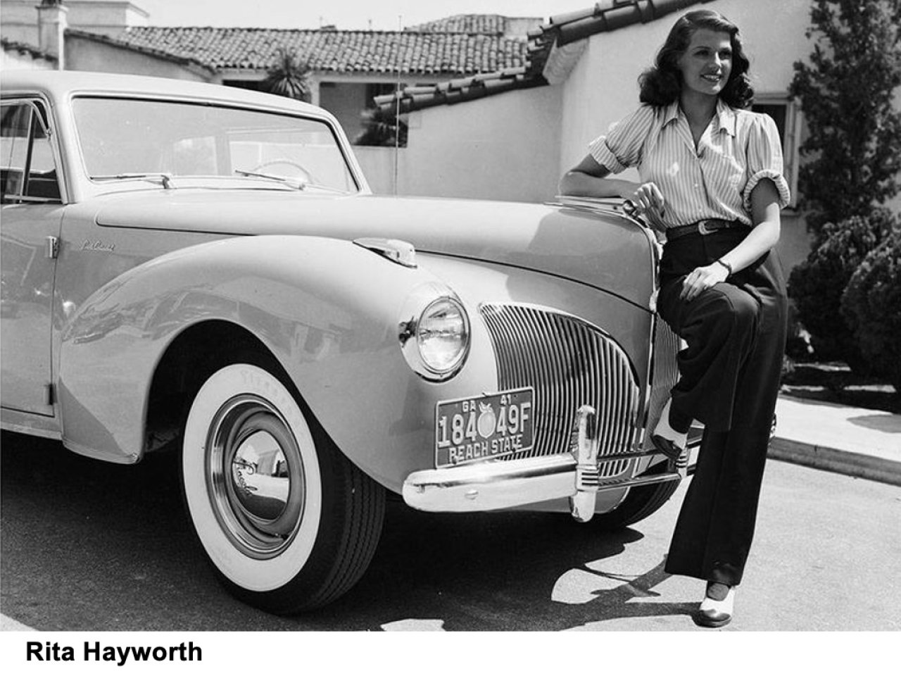
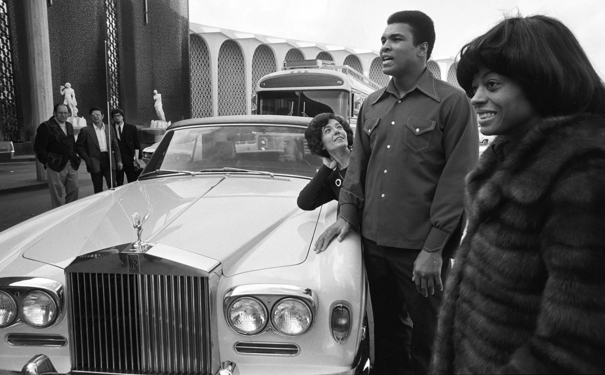
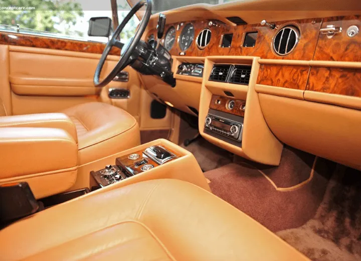
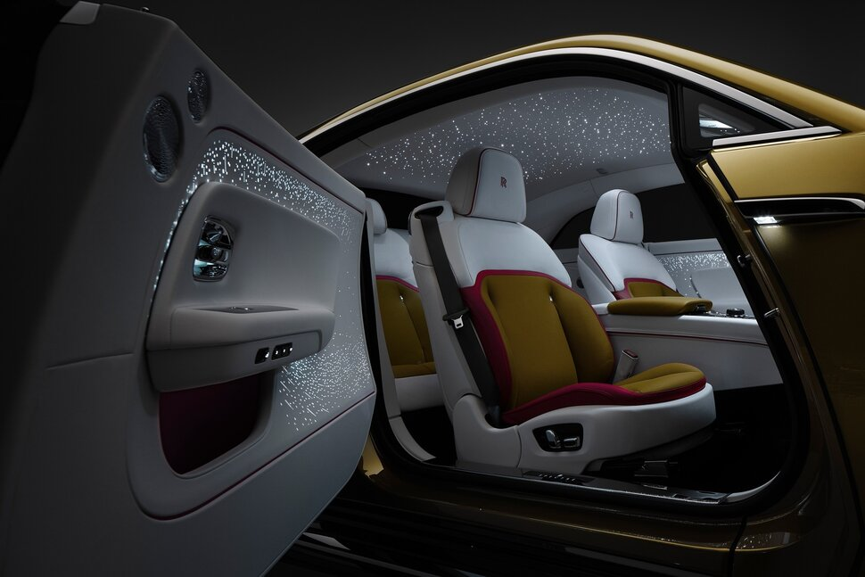

Local Owned Luxury Cars trilogy
The Evolution of Luxury Cars
Early Beginnings 1900s 1930s
Luxury on wheels began in the early 20th century. Marques like Rolls-Royce, Packard, and Cadillac established a new automotive class vehicles not just for transport, but for status. Crafted by hand, early luxury cars featured plush interiors, smooth rides, and custom coachwork, setting the gold standard for refinement. The oldest surviving luxury car brand is generally considered to be the Mercedez Benz.
Post-War Glamour 1940s 1960s
After WWII, automotive design flourished. European brands like Mercedes-Benz and Jaguar introduced cutting-edge engineering and graceful aesthetics. In the U.S., Lincoln and Chrysler Imperial exuded American opulence with tailfins, chrome, and V8 power. Luxury became aspirational, sleek, and international.
Technological Prestige 1970s 1990s
The 1990's enhanced the cars the average American can afford with the introduction of the Dodge Viper in 1992 Corvettes new design with with the ZR-1 model. Luxury expanded beyond comfort into innovation. Brands such as BMW, Lexus, and Audi focused on blending high performance with tech-forward features like ABS brakes, onboard computers, and adaptive suspensions. The segment became a blend of status symbol and engineering showcase.
Modern Mastery 2000s Present
Today, luxury cars balance tradition with transformation. From handcrafted interiors to AI-assisted driving, they offer personalization, sustainability, and seamless tech. Today's cars have technology that pretty much does it all. For example, some modern vehicles can recognize your face or your fingerprint. Of course, cars also have tech that assists when driving on the highway and amenities that can keep your passengers comfortable and entertained on long trips.